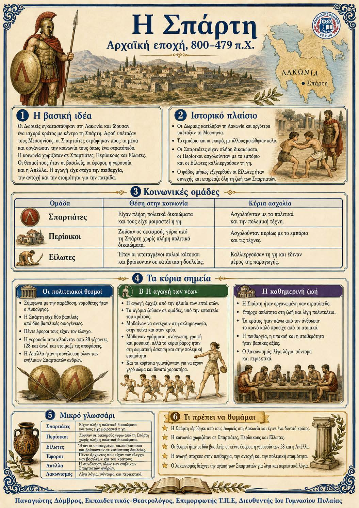

Πληροφοριογράφημα ενότητας
Το πληροφοριογράφημα αυτής της ενότητας δεν έχει ανέβει ακόμη. Οι σημειώσεις παραμένουν πλήρως διαθέσιμες.

Κεφάλαιο 4 · Αρχαϊκή εποχή, 800–479 π.Χ.
Οι Δωριείς ίδρυσαν στη Λακωνική ένα ισχυρό κράτος με κέντρο τη Σπάρτη. Μετά την υποταγή των Μεσσηνίων, η πόλη περιόρισε τις επαφές της και οργανώθηκε σαν στρατόπεδο. Η κοινωνία χωριζόταν σε Σπαρτιάτες, περίοικους και είλωτες. Το πολίτευμα συνδύαζε βασιλείς, εφόρους, γερουσία και λαϊκή συνέλευση. Η αγωγή των νέων στόχευε στην πειθαρχία, στη σωματική αντοχή και στην προσφορά προς την πόλη.
